Touch Designer Project Documentation
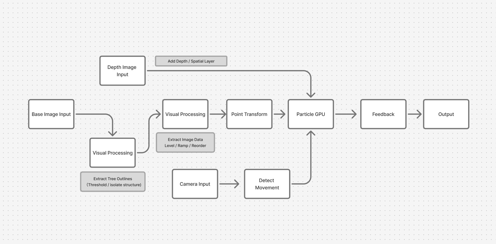
Based on the feedback, I really liked the suggestion of making
the particles flow and move more dynamically. But I also want
to explore creating a more 3D, spatial effect, where the movement
and force detected from the viewer’s face can influence how the
particles flow.
For the overall process, I start with a base image and extract
its visual data and tree outlines, which are then translated
into points and fed into the particle system. I add another
depth layer to create a more spatial effect, while the camera
captures the viewer’s movement through optical flow and uses
that data to influence the particles in real time, with feedback
allowing the movement to accumulate and leave traces over time.
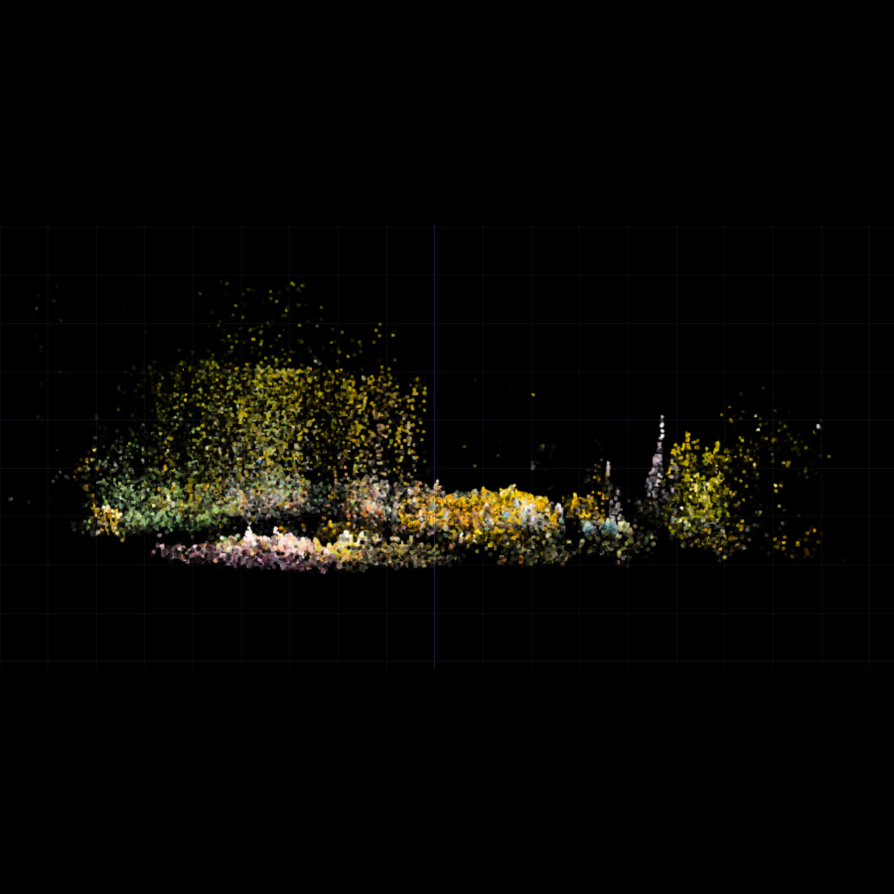
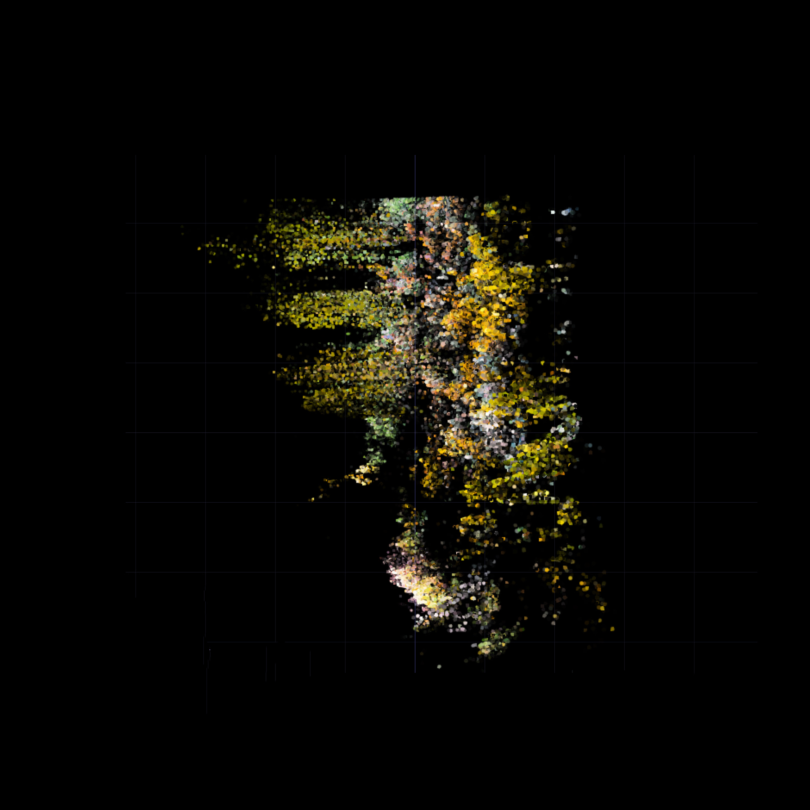
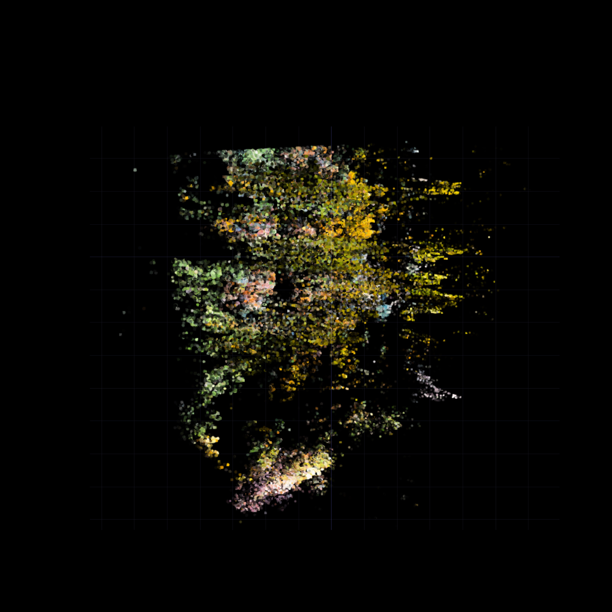
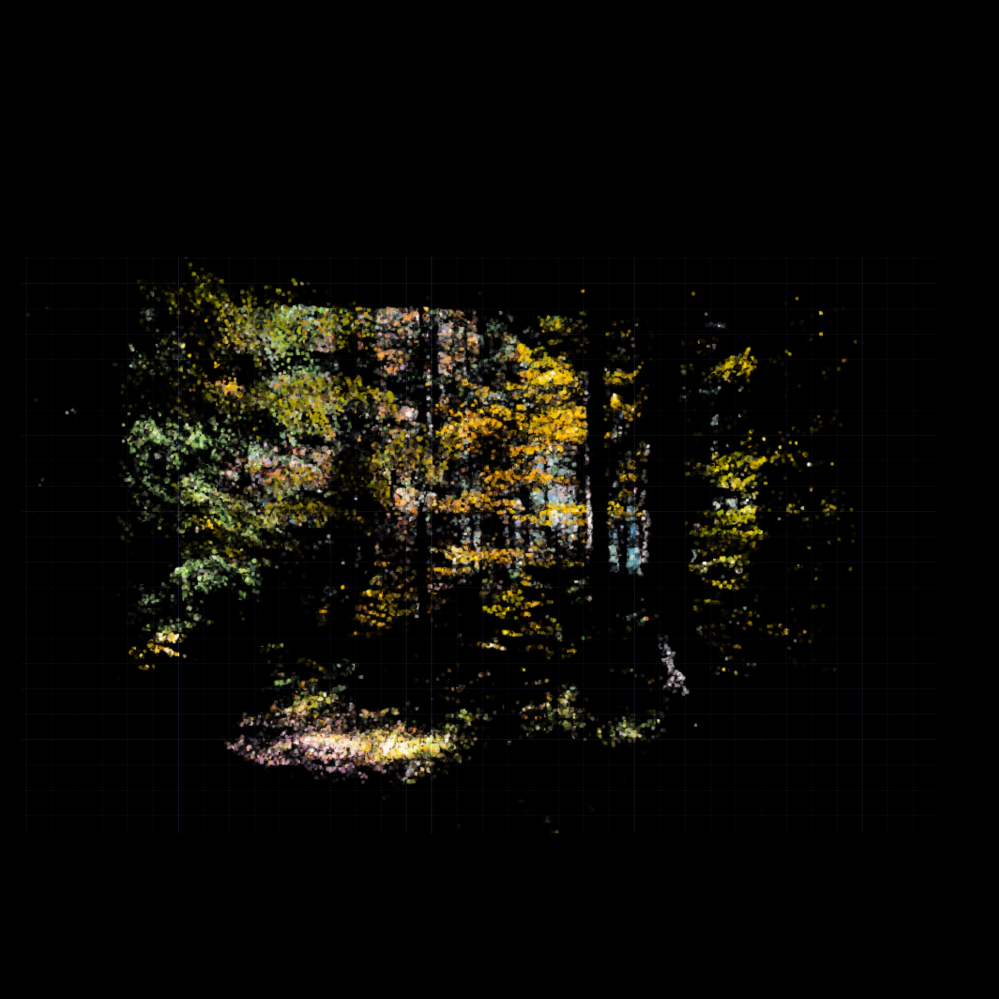
This project was inspired by a piece of work by artist Dan Hoopert.
I was drawn to the way light traces the outlines of a 2D image.
Although I wasn’t able to recreate the same effect, I used it as
a starting point to explore TouchDesigner’s particle system and
experiment with adding more depth and interaction.
The core idea became exploring how a static 2D image could turn
into a dynamic and spatial experience. By translating the image
into particles, adding depth, and using the viewer’s movement to
influence the particle flow, I wanted to make the image feel less
like something we simply look at and more like something we can
interact with and physically affect.
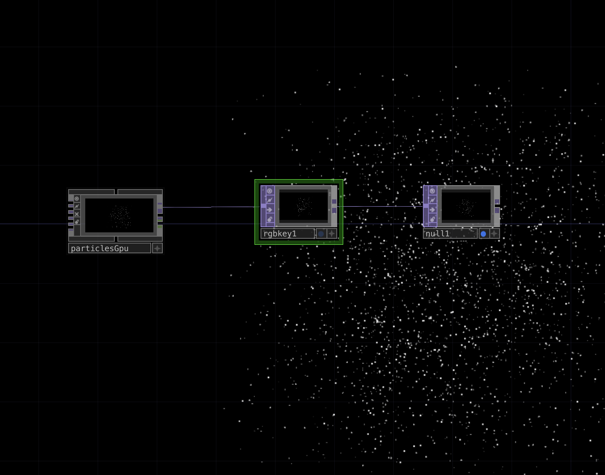
I started by experimenting with the Particle GPU to understand how particles behave and how I could control their movement. At this stage, I was mainly testing the system before connecting it to an image.
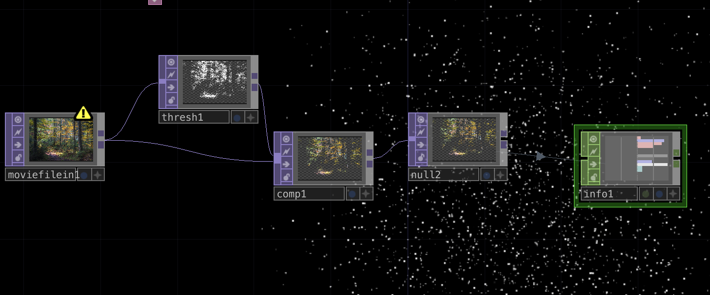
I processed the original image by removing the darker areas and keeping only the brighter parts.
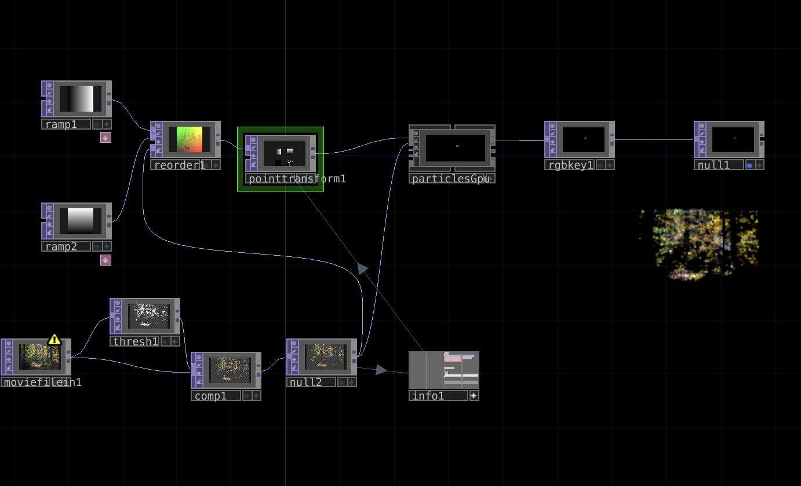
I started connecting the processed image data to the Particle GPU and used ramps and Point Transform to control the position and distribution of the particles. The original image began to reappear through particles rather than pixels.
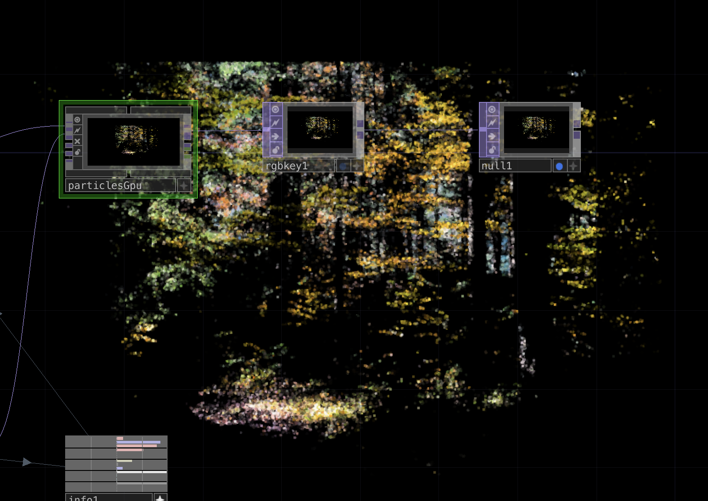
After getting the basic particle structure to work, I brought the colors from the original image back into the particles. This made the result more recognizable as the forest while still keeping the fragmented particle effect.
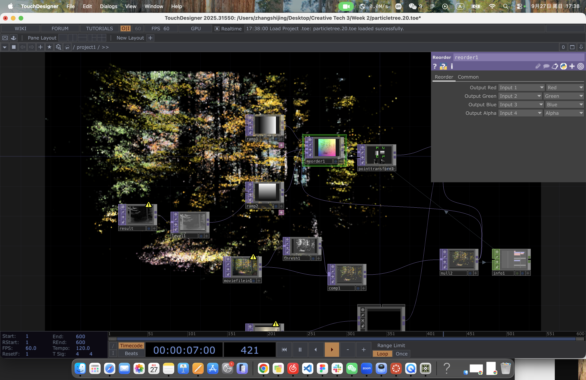
I also used DepthR to create a depth map of the original image, adding another layer to make the particles feel more three-dimensional. This shifted the project from recreating a flat 2D effect toward exploring more interesting perspectives and visual possibilities.
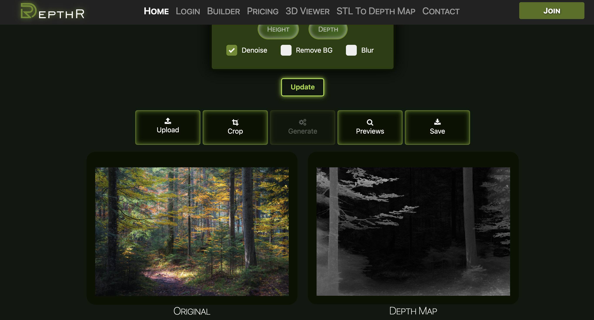
DepthR: https://depth-r.com/
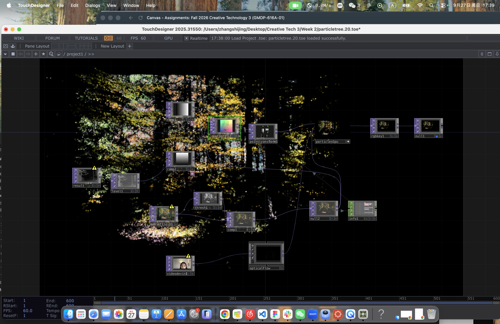
I connected a camera and used Optical Flow to detect my movement. The interaction worked at first when the image was still 2D, but after I added the depth map, the particles stopped responding. Optical Flow can still detect my movement, but the movement no longer affects the image even when it is connected to the Particle GPU. I tried adjusting the setup several times, but it still isn’t working consistently. I’m still exploring and troubleshooting this interaction to understand how the movement data can work.
This project started with the simple goal of recreating an effect
that I found interesting, but the process gradually took me in a
different direction. Through experimenting with particles, image
processing, depth, and camera input, I began to understand
TouchDesigner more through making and testing rather than
following a fixed plan.
Not everything worked as I expected, especially the interaction
after adding depth, but I think this became an important part of
the process. Instead of focusing on recreating the original
reference, I became more interested in how I could transform a
static image into something more spatial and responsive. Moving
forward, I want to continue exploring the connection between
human movement and the 3D particle system, and see how the viewer
can physically affect and reshape the image.